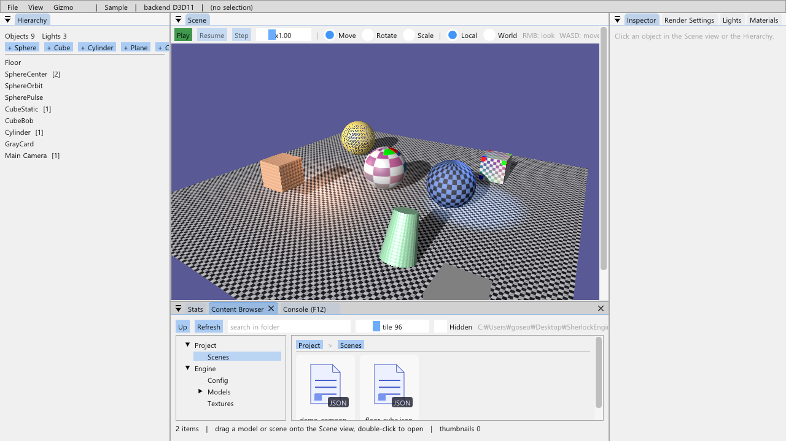
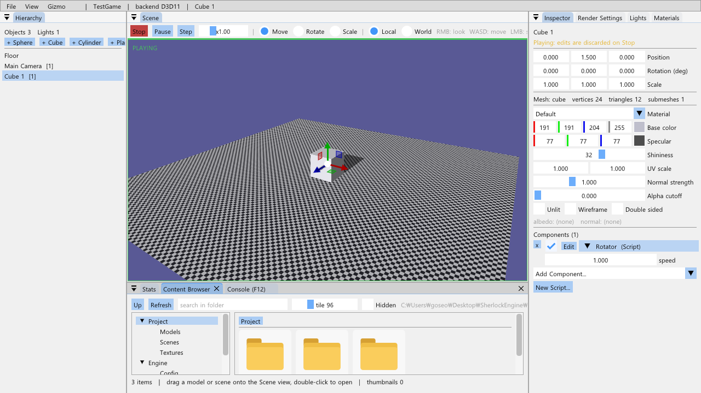
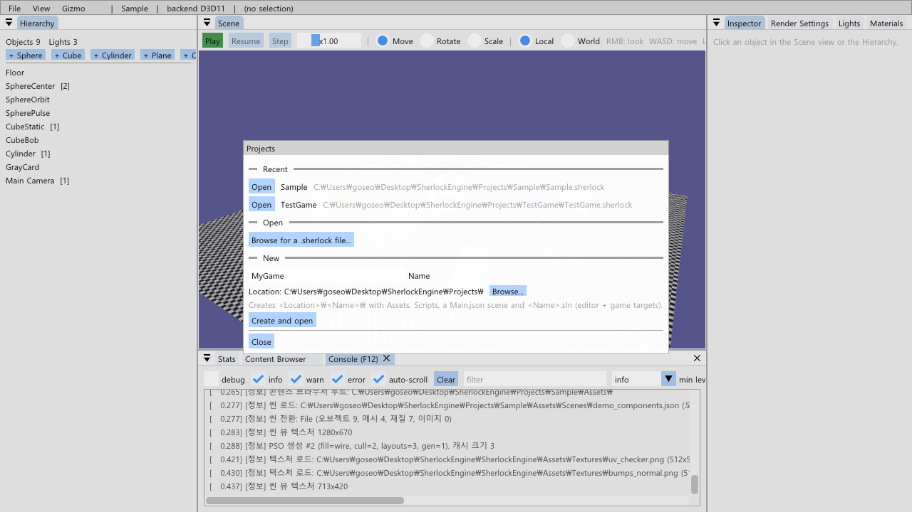
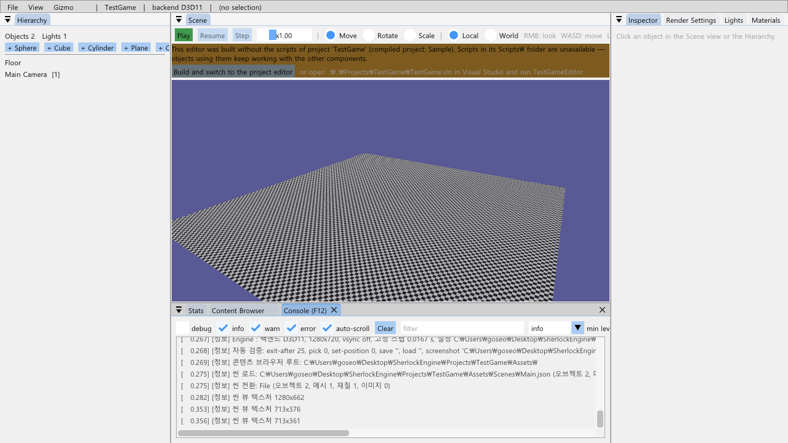

11-E단계 · 프로젝트 시스템
씬이 아니라 게임을 분리합니다. 언리얼의 .uproject 처럼 프로젝트는 폴더 하나 — <이름>.sherlock + Assets\ + Scripts\ — 이고, 에디터가 그 폴더에 Visual Studio 솔루션(에디터 타깃 + 게임 타깃)을 생성합니다. 엔진 컴포넌트(Rigidbody·FollowTarget·CameraComponent)와 엔진 콘텐츠(텍스처·모델)는 엔진에 남아 어떤 프로젝트를 열어도 그대로 쓰이고, 프로젝트 스크립트만 프로젝트에 속합니다. 선택한 것은 "A안": 프로젝트마다 자기 에디터 exe 를 빌드하는 워크플로(언리얼의 흐름)이며, 스크립트를 DLL 로 로드하는 B안(언리얼의 모듈 구조)으로 가는 길을 열어 두었습니다.
Paths 가 세 루트(엔진·프로젝트·exe)를 알고 에셋을 "프로젝트 → 엔진 → exe" 순으로 찾으므로 씬 파일은 어느 루트인지 적지 않습니다. AppBase 가 시작할 때 .sherlock 을 찾아 루트를 정하고(--project=, exe 위쪽, 엔진의 Projects\Sample), 에디터는 런처·프로젝트 설정·솔루션 생성을 얹습니다. 스크립트는 Scripts\*.cpp 와일드카드로 프로젝트 솔루션의 두 exe 에 컴파일되고, exe 는 SHERLOCK_PROJECT_NAME 으로 "내가 어느 프로젝트의 에디터인가" 를 압니다.
1.요약
| 항목 | 구현 | 확인 |
|---|---|---|
| 프로젝트 파일 | Core/Project: <이름>.sherlock(name, startScene, engineRoot), Create(폴더 골격), FindUpwards(exe 위쪽 탐색) | Projects\Sample, Projects\TestGame(검증) |
| 루트 | Paths: GetEngineRoot / GetProjectRoot / GetEngineAssetRoot / GetAssetRoot, GetAssetPath 는 프로젝트 → 엔진 → exe. AppBase::ResolveProject 가 설정보다 먼저 | 로그 "프로젝트 루트 … 엔진 루트 … 컴파일된 프로젝트 …" |
| 콘텐츠 브라우저 | 루트 둘(Project / Engine) — 트리에 두 최상위 노드, 브레드크럼 첫 조각이 루트, 썸네일 키는 절대 경로 | 그림 1 |
| 엔진 컴포넌트 | Game\Components(Rigidbody·FollowTarget)와 Scene\CameraComponent 는 엔진 lib. 어떤 프로젝트에서도 Add Component 에 나온다 | TestGame 에디터의 Cube 1 에 Rigidbody·Rotator |
| 프로젝트 스크립트 | <프로젝트>\Scripts\*.cpp 와일드카드. ScriptCreator 는 파일만 만든다(vcxproj 편집 없음) | New Script → 빌드 → 목록 |
| 솔루션 생성 | App/ProjectGenerator: <이름>.sln, <이름>Editor.vcxproj, <이름>.vcxproj(엔진 lib ProjectReference, vcpkg 매니페스트 루트 = 엔진 저장소, SHERLOCK_PROJECT_NAME, Binaries\ 출력) | MSBuild 성공, Binaries\Debug\TestGameEditor.exe |
| 런처 | File > Projects: 최근 목록(%LOCALAPPDATA%\SherlockEngine\editor.json), Open(.sherlock 대화상자), New(이름·위치 → 폴더·예제 스크립트·솔루션·Main.json). Project Settings(시작 씬) | 그림 1 메뉴 바의 프로젝트 이름 |
| 스크립트 없는 에디터 | 컴파일된 프로젝트 ≠ 열린 프로젝트면 씬 뷰 위 배너 + "Build and switch to the project editor"(MSBuild → 그 exe 실행 → 종료) | 그림 3 |
| Build Game / GameApp | 프로젝트 기준: 런타임 exe = 에디터 옆 <이름>.exe(없으면 Debug 로 빌드), 엔진 콘텐츠 위에 프로젝트 콘텐츠, 패키지에 .sherlock 사본. GameApp 은 .sherlock 의 startScene | 8절 F |
2.프로젝트 = 폴더 + .sherlock
Projects\Sample\ (엔진 저장소의 예제 프로젝트. 엔진 솔루션의 SherlockEditor/SherlockGame 이 이것의 에디터·게임)
├─ Sample.sherlock { "name": "Sample", "startScene": "demo_components.json", "engineRoot": "" }
├─ Assets\Scenes\demo_components.json, floor_cube.json
└─ Scripts\PlayerController.h/.cpp, Rotator.h/.cpp
<어디든>\MyGame\ (런처의 New 가 만든다)
├─ MyGame.sherlock engineRoot = "C:\…\SherlockEngine\SherlockEngine\" (엔진 소스 폴더 — 셰이더·엔진 콘텐츠·솔루션 참조)
├─ Assets\Scenes\Main.json 바닥 + 방향광 + Main Camera (BuildEmptyScene 을 저장)
├─ Scripts\Rotator.h/.cpp 예제 스크립트 (ScriptCreator 템플릿)
├─ MyGame.sln, MyGameEditor.vcxproj, MyGame.vcxproj (ProjectGenerator)
├─ Binaries\Debug\MyGameEditor.exe, MyGame.exe (빌드 후)
└─ Build\ 패키징 결과Project::Create 는 폴더 골격과 .sherlock 만 만들고, 나머지(예제 스크립트, 솔루션, 기본 씬)는 에디터(TestApp::CreateProject)가 프로젝트를 연 뒤 채웁니다 — Core 가 Scene·에디터 계층을 모르게 하기 위해서입니다. engineRoot 가 존재하지 않는 경로면(다른 PC 로 옮긴 프로젝트) 무시하고 exe 옆에서 찾습니다.
3.세 루트: 엔진 · 프로젝트 · exe
// Paths — 11-E
GetEngineRoot() SetEngineRoot(프로젝트 파일의 engineRoot) → exe\..\..\SherlockEngine\ 마커 → exe 폴더(배포)
GetProjectRoot() AppBase::ResolveProject: --project= → Project::FindUpwards(exe 폴더, 3단계) → 엔진의 Projects\Sample
GetAssetPath(rel) 프로젝트 Assets\rel → 엔진 Assets\rel → exe\Assets\rel // 씬 파일의 경로는 루트를 적지 않는다
GetSceneDir() 프로젝트 Assets\Scenes\ GetShaderPath: exe\Shaders\*.cso → 엔진 루트 Shaders\*.hlsl (런타임 컴파일)- 왜 폴백 순서인가. 씬이
Models\DamagedHelmet\DamagedHelmet.glb라고만 적어도 프로젝트에 그 파일이 없으면 엔진 콘텐츠에서 찾습니다. 프로젝트에 같은 이름을 두면 프로젝트 것이 이깁니다(언리얼의 Engine/Game 콘텐츠와 같은 규칙). 패키지에서는 둘이 한 폴더(exe\Assets)라 규칙이 그대로 성립합니다. - 프로젝트 에디터의 셰이더.
Binaries\Debug\에는 .cso 가 없으므로 엔진 루트의 .hlsl 을 런타임 컴파일합니다(4단계의 폴백). 시작이 수십 ms 느려질 뿐이고 핫 리로드는 같은 파일을 봅니다. - ResolveProject 가 설정보다 먼저.
engine.ini도GetAssetPath로 찾으므로 프로젝트가 자기Assets\Config\engine.ini를 두면 그것이 쓰입니다(없으면 엔진 것).
4.엔진 컴포넌트 vs 프로젝트 스크립트
사용자의 요구는 "Rigidbody 같은 컴포넌트는 엔진 소속, 다른 프로젝트를 열어도 사용 가능" 이었습니다. 그래서 경계를 파일 위치로 못박았습니다: SherlockEngine\Game\Components\(Rigidbody·FollowTarget)와 Scene\CameraComponent 는 엔진 정적 라이브러리에 컴파일되어 모든 exe 에 들어가고(/WHOLEARCHIVE, 11-D), <프로젝트>\Scripts\ 는 그 프로젝트의 두 exe 에만 컴파일됩니다. Inspector 의 Add Component 가 Scripts / Components 로 나뉘어 보이는 것이 이 경계입니다. 옛 Game\Scripts(PlayerController·Rotator)는 Sample 프로젝트로 옮겼습니다 — 예제이지 엔진이 아니기 때문입니다.
5.프로젝트 솔루션 생성
// ProjectGenerator 가 쓰는 <이름>Editor.vcxproj 의 핵심 (게임 타깃도 같고 소스만 다르다)
<SherlockRepo>$(MSBuildProjectDirectory)\..\..\</SherlockRepo> // 엔진 저장소 (같은 드라이브면 상대, 아니면 절대)
<SherlockEngineDir>$(SherlockRepo)SherlockEngine\</SherlockEngineDir>
<VcpkgEnableManifest>true <VcpkgManifestRoot>$(SherlockRepo) // 저장소 밖 프로젝트도 엔진의 vcpkg.json 을 쓴다
<OutDir>$(ProjectDir)Binaries\$(Configuration)\ <IntDir>$(ProjectDir)Intermediate\$(ProjectName)\$(Configuration)\
<PreprocessorDefinitions>…;SHERLOCK_PROJECT_NAME="MyGame"
<AdditionalIncludeDirectories>$(SherlockEngineDir);$(ProjectDir)Scripts
<AdditionalOptions>/WHOLEARCHIVE:SherlockEngine.lib
<ClCompile Include="$(SherlockRepo)SherlockEditor\EditorMain.cpp" /> <ClCompile Include="$(SherlockEngineDir)App\Editor.cpp" /> …
<ClCompile Include="Scripts\*.cpp" /> // 와일드카드: New Script 뒤 vcxproj 편집 없음
<ProjectReference Include="$(SherlockEngineDir)SherlockEngine.vcxproj">- 에디터 소스 목록은 한 곳.
ProjectGenerator::GetEditorSources()(TestApp·Editor·ContentBrowser·ScriptCreator·GameBuilder·DebugUI·ProjectGenerator·ProjectLauncher). 엔진 솔루션의SherlockEditor.vcxproj와 같아야 하며, 에디터 파일을 추가하면 둘 다 고쳐야 합니다. - 엔진 lib 공유. 처음에는 생성 솔루션이 엔진 lib 를
$(SolutionDir)x64\— 즉 프로젝트 폴더 — 에 다시 빌드했습니다(29 초). lib 의 OutDir 을$(ProjectDir)..\x64\$(Configuration)\로 못박아 어느 솔루션에서 빌드하든 엔진 저장소의 것을 공유합니다(5 초). - SHERLOCK_PROJECT_NAME 은 exe 의 것. 매크로는 exe 프로젝트에만 정의되므로 엔진 lib 의
AppBase가 직접 읽으면 항상 비어 있습니다. 진입점(EditorMain/GameMain)이AppBase::SetCompiledProjectName으로 넣어 줍니다.
6.런처와 "스크립트 없는 에디터"
A안의 대가는 "프로젝트를 바꾸면 그 프로젝트의 에디터 exe 가 필요하다" 입니다. 에디터는 이것을 숨기지 않고 안내합니다: 컴파일된 프로젝트 이름과 열린 프로젝트 이름이 다르면 씬 뷰 위에 배너를 띄우고 Build and switch to the project editor 버튼이 <이름>.sln /t:<이름>Editor 를 MSBuild 로 빌드한 뒤 Binaries\Debug\<이름>Editor.exe --project=… 를 띄우고 자기는 종료합니다. 그 사이에도 열린 씬은 정상 동작하며, 없는 스크립트는 로드할 때 경고를 남기고 건너뜁니다(레지스트리, 11-C). 런처(File > Projects)는 최근 목록·열기 대화상자·새 프로젝트를 제공하고, New 는 프로젝트를 만든 뒤 바로 엽니다(엔진 에디터에서 만들었으므로 배너가 뜨고, 버튼 한 번으로 그 프로젝트의 에디터로 넘어갑니다).
7.Build Game 과 GameApp
GameBuilder는 프로젝트 기준입니다:Build\는 프로젝트 안, 시작 씬은 프로젝트Assets\Scenes, 런타임 exe 는 에디터 옆의<이름>.exe(엔진 솔루션의 Sample 은SherlockGame.exe). 없으면 프로젝트 솔루션의 게임 타깃을 Debug 로 먼저 빌드합니다. 에셋은 엔진 콘텐츠 위에 프로젝트 콘텐츠를 덮어써 한 폴더로 모으고, 패키지에<이름>.sherlock(engineRoot 없음) 사본을 두어 런타임이 exe 옆에서 프로젝트를 찾게 합니다.GameApp은.sherlock의 startScene 을 먼저 보고, 없으면engine.ini의[game]을 봅니다. 개발 중Binaries\Debug\MyGame.exe를 직접 실행해도FindUpwards가 두 단계 위의.sherlock을 찾습니다.
8.자동 검증
# A: 엔진 에디터 = Sample 프로젝트의 에디터. 시작 씬(demo_components.json) 로드, 스크립트 있음
SherlockEditor.exe --exit-after=40 --play=1 --dump-objects=1
# B: 새 프로젝트 생성 (Projects\TestGame: 폴더·.sherlock·Rotator 예제·솔루션·Main.json) + 그 에디터를 MSBuild
SherlockEditor.exe --exit-after=30 --new-project=TestGame --build-project=1
# C: 생성된 에디터 실행 — exe 위쪽에서 프로젝트를 찾고, 컴파일된 프로젝트 = TestGame, Rotator 부착
Projects\TestGame\Binaries\Debug\TestGameEditor.exe --exit-after=40 --play=1 --add=1 --add-component=Rotator --dump-objects=1
# D: 엔진 에디터로 TestGame 을 열면 배너 (컴파일된 프로젝트 Sample ≠ TestGame)
SherlockEditor.exe --exit-after=20 --project=..\..\Projects\TestGame --screenshot=<절대 경로> # 런처 화면: --launcher=1
# E: TestGame 에디터에서 패키징 (게임 타깃이 없으면 먼저 Debug 빌드) → Build\TestPack\TestPack.exe 실행
TestGameEditor.exe --exit-after=20 --build-game=TestPack
Projects\TestGame\Build\TestPack\TestPack.exe --exit-after=60 --dump-objects=19.함정과 해결
- 주석 끝의 백슬래시.
// … Sample\처럼 한 줄 주석이\로 끝나면 다음 줄이 주석에 이어져(줄 연속) 선언이 사라진다. C4010 경고와 함께 "ListScenes 가 멤버가 아니다" 같은 엉뚱한 오류가 났다. 경로 주석은 백슬래시로 끝내지 않고 "폴더" 라고 쓴다. - 매크로가 lib 에 없다. 5절. exe 의 정의를 lib 가 볼 수 없다 — 진입점이 값을 넘긴다.
- $(SolutionDir) 기준 OutDir. 5절. 참조된 lib 가 참조하는 솔루션의 폴더에 빌드된다. lib 의 OutDir 을 자기 저장소 기준으로.
- 배너가 안 보임. 씬 뷰 이미지가 남은 공간을 다 쓰므로 그 뒤에 그린 배너는 잘린다. 배너를 이미지 앞(툴바 줄 아래)에 그린다.
- 상대 경로 프로젝트.
--project=..\..\Projects\X로 열면 최근 목록에 상대 경로가 따로 쌓이고 생성기의 경로 계산도 흔들린다.Project::Load가weakly_canonical(absolute())로 정규화한다. - vcpkg 매니페스트 루트. 저장소 밖 프로젝트는 위로 올라가도
vcpkg.json이 없다.VcpkgManifestRoot를 엔진 저장소로 지정하면 같은vcpkg_installed를 쓰고 DLL 배치도 된다. - ImGui 의 "\\" 이름. 트리 노드 라벨이 루트마다 겹치므로(Project/Engine 둘 다 Textures)
PushID(root)를 추가로 건다.
10.검증과 스크린샷
- 완료 기준 "새 프로젝트를 만들고 빌드하면 그 에디터에서 프로젝트 스크립트와 엔진 컴포넌트를 함께 쓸 수 있다" — B: TestGame 생성 →
TestGame.sln /t:TestGameEditorMSBuild 성공(처음 29 초, lib 공유 후 5 초). C:TestGameEditor.exe가 두 단계 위의TestGame.sherlock을 찾아 "컴파일된 프로젝트 TestGame", Main.json 로드, Cube 1 에 Rotator(프로젝트 스크립트) 부착·재생 (그림 2). 엔진 컴포넌트(Rigidbody 등)는 Add Component 의 Components 그룹에 그대로. - A: 엔진 에디터 = Sample: 시작 씬 로드, 컴파일된 프로젝트 Sample, Rotator 재생. D: 엔진 에디터로 TestGame 을 열면 컴파일된 프로젝트 Sample ≠ TestGame → 배너 (그림 4). 런처는 그림 3.
- 콘텐츠 브라우저에 Project / Engine 두 트리 (그림 1). 세 프로젝트 Debug 빌드 경고 0(엔진 솔루션), 생성 솔루션 빌드 경고 0.


Binaries\Debug\TestGameEditor.exe). Main.json 위에 큐브를 놓고 프로젝트 스크립트 Rotator 를 붙여 재생 중. Project 트리에 Models·Scenes·Textures.

11.다음 단계 (B안: DLL)
- 스크립트를 프로젝트 DLL 로. 생성기의 게임 타깃을
DynamicLibrary로 바꾸고 에디터가LoadLibrary. 그러려면 레지스트리가 exe 와 DLL 에서 같은 인스턴스여야 하므로 엔진을 DLL 로 만들거나 등록 함수 포인터를 넘긴다. 핫 리로드 = 11-C 스냅샷 저장 → DLL 교체 → 복원. A안에서 만든 폴더 규약·루트·생성기·런처는 그대로 쓰인다. - 프로젝트 에디터에 .cso 복사. 생성 vcxproj 에 엔진
x64\<구성>\Shaders를 Binaries 로 복사하는 타깃. - 프로젝트별 engine.ini. 지금은 있으면 쓰인다는 규칙만 있다. Project Settings 에서 편집하게 한다.
12.참고 문헌
- Epic Games, Unreal Engine Directory Structure / .uproject. dev.epicgames.com/…/unreal-engine-directory-structure
- Microsoft Learn, MSBuild wildcards in item elements. learn.microsoft.com/…/how-to-select-the-files-to-build
- vcpkg, Manifest mode: VcpkgManifestRoot. learn.microsoft.com/…/msbuild-integration
- Microsoft Learn, IFileOpenDialog (FOS_PICKFOLDERS). learn.microsoft.com/…/nn-shobjidl_core-ifileopendialog